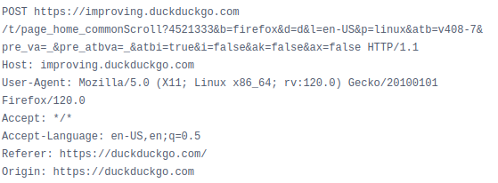
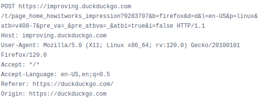
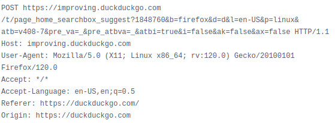

The CEO of the privacy and freedom-friendly search engine turns out to be a dictator who wants to thought-police you. Sussy, but who doesn't have a phase sometimes?
There's also this gem about Microsoft trackers.
Kind of insane that the company whos main thing is privacy kept its reputation after this, but it is what it is.
So today I was casually doing some bug bounty and my vpn lagged out. Happens sometimes. I had Firefox open in Zaproxy and out of laziness went to duckduckgo.com to check if I'm connected.
It was boring, I scrolled a bit, and the vpn went live again. And what do you know, my proxy picked up this funny request:

So wait, wait a second. It fingerprinted me, tracked my behavior on the website, and send this home? The search engine of the company that says "WE LITERALLY DON'T TRACK YOU"?
This gotta be a joke, right?
Wrong.
It tracks all the movement on the page, including what you type, what links you click, etc.. Which would not be THAT BIG of a deal at all if they didn't purposefully fingerprint you!



Another interesting thing is that those requests don't show up in the devtools history. I don't know off the top of my head what redirect magic they used to achieve that, but unless you use a proxy you can't see them.
So if you wanna test it for yourself and maybe put a bit more effort than me into the research - install Zaproxy, BurpSuite, or even Wireshark and capture what the page sends.
Okay, this is pretty bad, but is it enough to call them evil?
I think it is, since after me posting a question about this on their subreddit (r/duckduckgo) my post has been removed and my account was banned on the sub.
I can't overstate how insanely sad this is. Reputable people stand up against disgusting corporations in the most respectable way possible, by creating something that's better, something that's supposed to avoid making the same mistakes. And where do they end up? Among the ranks of those they tried to overthrow.
And if you're gonna be like "But they need to improve the product somehow!", if you're gonna argue in favor of business analytics, and importance of profit margins, and all that shit, I genuinely don't know how to help you.
Screw their profit margins. YOU decide what's acceptable. You are a person, not a business. Think like a person, think in favor of yourself. It's only acceptable for them to do this because everybody allows it, not because it's the only way to keep the business runnning.
If you desire some sort of conclusion here, it's that nobody should ever, under any circumstance, put their trust in anything that involves money or power.
Reputable or not, "non-profit" or not, open source or not, they WILL screw you over in the most subtle, most hilarious way given the slightest opportunity.
And if anybody from DDG reads this - email me. I'm genuinely curious to hear the story, or ideally - be proven wrong.
🙃